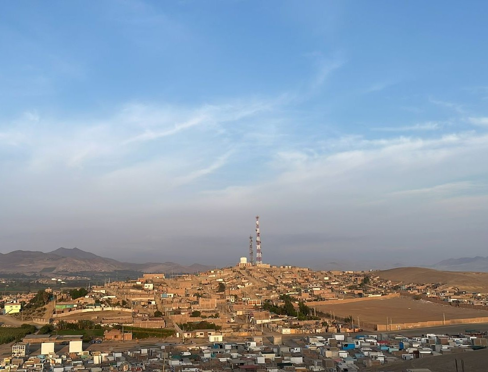

Cinco destinos únicos
Elige tu destino
Cada distrito de Barranca guarda su propia identidad, historia y riqueza. Descúbrelos todos.

Supe Puerto
Puerto pesquero de tradición milenaria. Puerta de entrada a Áspero y la Civilización Caral. Playas, gastronomía y la festividad de San Pedro y San Pablo.
Explorar
Barranca
Capital provincial. Playas, malecón y la famosa cachanga. Ciudad costera llena de vida y tradición.
Explorar
Paramonga
Hogar de la imponente Fortaleza Chimú. Arquitectura preincaica, caña de azúcar y devoción a San Jerónimo.
Explorar
Pativilca
Donde Simón Bolívar escribió su célebre carta antes de la Batalla de Junín. Historia, río y campiña verde.
Explorar
Supe
Valle donde nació Caral, la civilización más antigua de América. Pirámides de 5000 años en un valle vivo.
Explorar